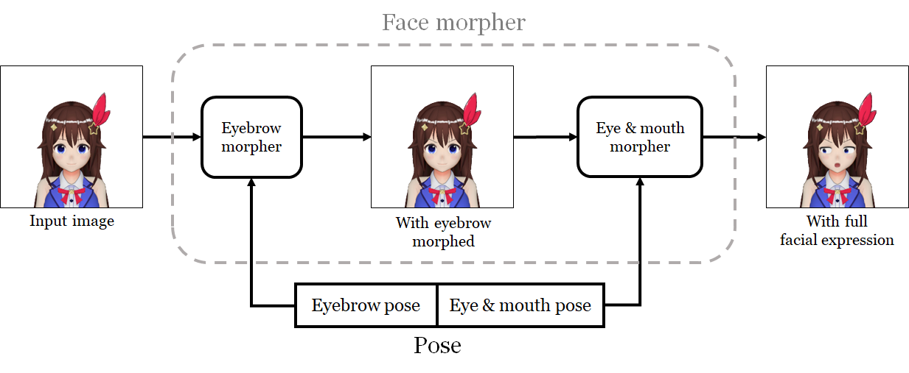
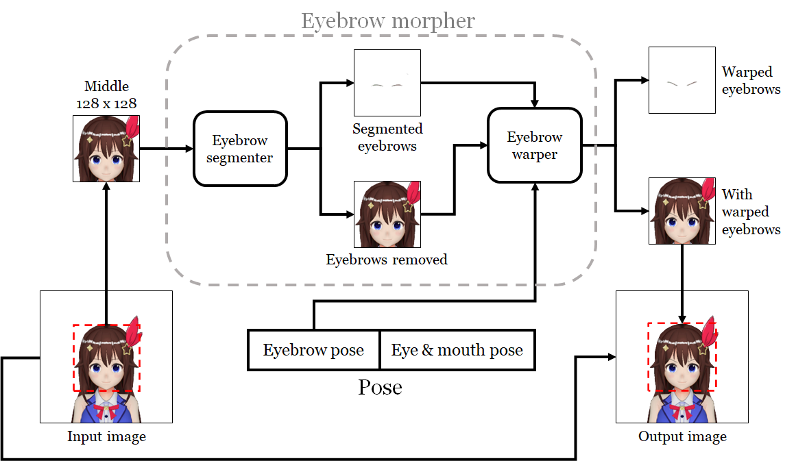
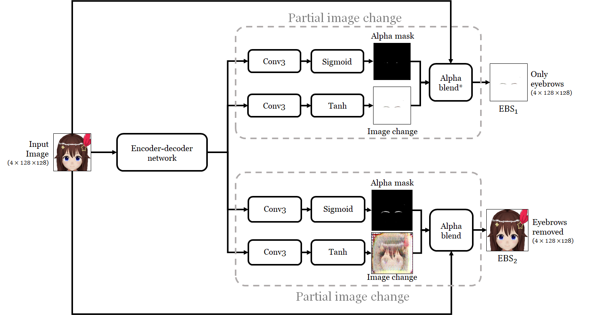
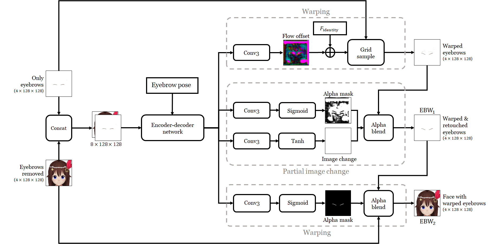
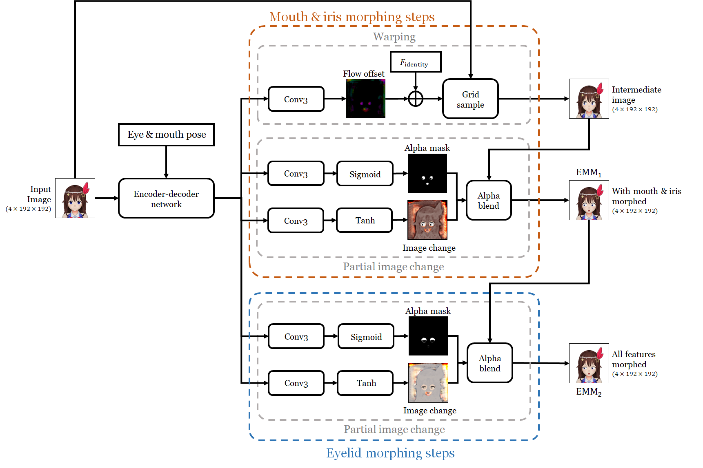

-
Most virtual YouTubers are affiliated with Ichikara Inc., cover corp, 774 inc., Noripuro, and KMNZ. The rest are independent. Copyrights of the images belong to their respective owners.
Abstract. I extended the animation-from-a-single-image neural network system I created in 2019 so that the characters can make more types of facial expressions. While the old system can only open/close the eyes and the mouth, this new version affords more eye/mouth shapes and can control the eyebrows and the irises. They allow a character to show various emotions and give more convincing impression of speech.
| Input [copyright] | Happy | Sad | Angry |
| Disgusted | Condescending | Uwamedukai [footnote] | Gangimari-Gao [footnote] |


-
The character is Otogibara Era (© Ichikara Inc.).
-
Uwamedukai (上目遣い) is Japanese for the pose where a shorter person looks at another taller one with upturned eyes while tilting the face down. See this link for more examples.
-
Gangimari-Gao (ガンギマリ顔) is a facial expression where a character glares at the viewer with the eyes wide open and the irises reduced in size while smiling. The disconcerting, if not borderline insane, look gives the impression that the character is high on drugs (キマっている). The expression is popularized by virtual YouTuber Tsunomaki Watame. See her in action here.
With the new network, I can drive character illustrations with motions authored for 3D models.
I also created a real-time motion transfer tool that provides more controls over the character's face.
I modified the tool to record my motion and was later able make multiple characters talk and sing with more dynamic lip and face movements.
1 Motivation
With the goal of making it easier to become a virtual YouTuber (VTuber), in 2019, I created a neural network system that can animate the face of any existing anime character, given only an image of it. The system, however, cannot yet be considered practical for becoming a VTuber. The most important shortcoming is that it can only close the eyes and mouth, robbing the character the ability to make most facial expressions. Characters used by professional VTubers, on the other hand, can deform the eyebrows, eyelids, irises, and mouth into various shapes. My goal in this article is to improve my system's expressiveness by increasing the types of movements it can produce.
2 Summary of Approach
My neural network system takes two inputs. First is a head shot of a character looking straight at the viewer, and second is a six-dimensional pose vector that specifies the pose the user wants the character to take. It outputs another image of the same character taking the specified pose. By varying the pose vector over time, the character can be animated. It can perform six types of movements because the pose vector is six-dimensional. However, excluding rotating the face, it can only closes its eyes and mouth.
The system poses a given character in two steps, each carried out by its own separate subnetwork. The face morpher closes the eyes and the mouth, and the face rotator rotates the face.

|
| Figure 2.1 An overview of how the 2019 system poses a character's face. The character is Kizuna AI (© Kizuna AI). |
To increase types of movement, I started by preparing larger datasets. From the collection of approximately 8,000 3D models I collected for my last system, I identified 39 common movements of facial parts and generated new datasets containing them. (You can see the list of movements here.) The movements encompass all the four movable facial features (eyebrows, eyelids, irises, and mouth) that can be observed in industrial characters. The size of the pose vector increased from 6 to 42 as a result [footnote].
-
Before, the pose vector has 6 dimensions with 3 dimensions used to control facial expression. With new types of movements incorporated, we need 39 dimensions instead, making the total length $39 + 3 = 42$.
To deal with larger pose vectors, I propose a new architecture for the face morpher network, the overview of which is depicted in Figure 2.2.
|  |
| Figure 2.2 An overview of the new face morpher architecture. It morphs the face in two steps: the first morphs the eyebrow, and the second morphs the eyes and the mouth. The character is Tokino Sora (© Tokino Sora Ch.). |
{kind=link}
The new face morpher has two subnetworks: the eyebrow morpher and the eye & mouth morpher, with each network deforming the organ(s) in its name. The pose vector is divided into parts that can be fed into the relevant subnetworks.
2.1 Eyebrow Morpher
The eyebrow morpher first segments out the eyebrows with a dedicated subnetwork called the eyebrow segmenter. It then uses another subnetwork called the eyebrow warper to deform eyebrow and then composite the result back to the original image.
|  |
| Figure 2.3 An overview of the architecture of the eyebrow morpher. |
{kind=link}
The two networks have similar structures. It contains an encoder-decoder network that turns the input image(s) and the (optional) pose vector into an intermediate feature representation, which is then used to perform several image manipulation steps. I employ three types of image manipulation, each encapsulated into a reusable neural network unit.
- Partial image change. The feature tensor is used to produce an alpha mask and another image that represents changes to the original image. The mask and the change image are then used to perform alpha blending with the input image to partially modify it. I take this step from the ECCV 2018 paper by Pumarola et al., which successfully applies it to alter facial expressions in human photos [2018].
- Combining. The feature tensor is used to produce an alpha mask, which is then used to combine two images through alpha blending.
- Warping. The feature tensor is transformed into an appearance flow, a map which tells, for each pixel of the output, which input image pixel to copy from [Zhou et al. 2016]. The appearance flow is then used to warp another image as it tells where each pixel should be moved to.
- Albert Pumarola, Antonio Agudo, Aleix M. Martinez, Alberto Sanfeliu, and Francesc Moreno-Noguer. GANimation: Anatomically-aware Facial Animation from a Single Image. ECCV 2018. [Project]
- Tinghui Zhou, Shubham Tulsiani, Weilun Sun, Jitendra Malik, and Alexei A. Efros. View Synthesis by Appearance Flow. ECCV 2016. [arXiv]
The eyebrow segmenter does its job with two partial image changes. The eyebrow warper deforms the extracted eyebrows with a warp and a partial image change. It then combines them back to the face image. Their architectures are given in Figure 2.4 and 2.5.

Figure 2.4 Architecture of the eyebrow segmenter.
{kind=link}

Figure 2.5 Architecture of the eyebrow warper.
{kind=link}
During research, I discovered that it was very important to process the eyebrows separately from other facial features. Network architectures that used the same network to morph all facial features blurred the eyebrows after morphing them. By having separate networks morph the eyebrows after segmenting them out, I introduced a strong bias to preserve the eyebrow pixels, yielding crisp results.
2.2 Eye & Mouth Morpher
The eye & mouth morpher has a similar architecture to the previous two networks. After passing the input image (the output of the eyebrow morpher) and the relevant part of the pose vector to an encoder-decoder network, it performs the following image manipulation steps:
- a warp to deform the mouth and the irises,
- a partial image change to retouch the output of the last step, and
- another partial image change to deform the eyelids.

Figure 2.7 Architecture of the eye & mouth morpher.
{kind=link}
The above rather complicated process was a result of my iterating on the architecture. The first warping step is required to preserve high-frequency details of the irises. If partial image change were used, iris patterns drawn by artists would be lost.
The last step is necessary to produce artifact-free closed eyelids. If I were to deform the eyelids together with other facial features, they would be covered by the first warping step. I discovered that this led to small lines near the eyes being smeared, and the eyelids would be blemished as a result.
3 Results
I applied my system to 200 images of VTubers and related characters to generate a short video clip for each, and I put all the videos together in the eyecatcher. You can watch the individual videos in the figure below.
| Image being animated | Video |

|
|
Below is a selection of characters making the 7 facial expressions shown at the beginning of the article.